Mesh Edit
C++
Overview
Bezier Curves and Surfaces
Vertex Normals
Remeshing Operations
Bezier Curves
Bezier curves and surfaces are frequently used to model smooth and infinitely scalable curves and surfaces, and can be evaluated through the de Casteljau algorithm.The Algorithm
Given n control points and a scalar parameter t ranging between 0 and 1, we can use linear interpolation to compute the n - 1 intermediate control points in the next subdivision level. An intermediate point pi' can be found through the following equation:pi' = (1 - t)pi + tpi + 1
I applied this step n - 1 times to obtain the resulting n - 1 intermediate control points in the next subdivision level.I continued applying this step successively to obtain the intermediate control points for each of the subdivision levels until one single point remained. This single point lies on the Bezier curve at the given parameter t.
Bezier Surfaces
The de Casteljau algorithm can also be used to evaluate Bezier surfaces. A Bezier surface is a parametric surface based on two parameters u and v, both ranging between 0 and 1.Given a n x m grid of control points, where each row of m control points defines a Bezier curve parameterized by u, I successively applied the de Casteljau algorithm to find the corresponding final point lying on each curve. Each of these obtained points for all n rows act as control points that define Bezier curves parameterized by v; I again successively applied the de Casteljau algorithm using these newly obtained control points to find a final point P that lies on the Bezier surface at the given parameter (u, v).
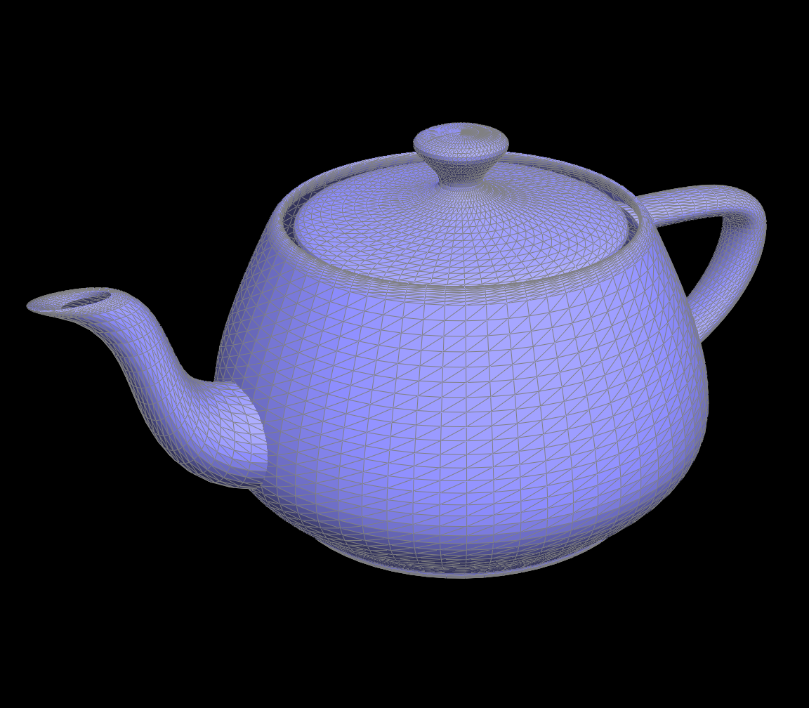
Area-Weighted Vertex Normals
Here, I implemented area-weighted normal vectors at vertices. These vertex normals can be used for Phong shading, providing better shading for smooth surfaces.Computing an area-weighted normal at a given vertex
Using the half-edge data structure, I iterated through all triangle faces incident to the vertex, aggregating the cross product of two triangle edges for each face into a 3D Vector n. Then, to find the approximate unit normal at this vertex, I normalized the aggregate vector n of area-weighted normals.By using area-weighted normal vectors, we can achieve smoother gradient shading, improving the default flat shading of our low poly mesh.
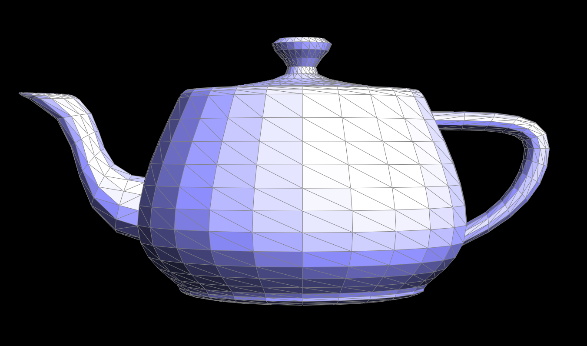
Default Flat Shading
In this section, I implemented multiple local remeshing operations, including edge flipping, edge splitting, and mesh upsampling.
Edge Flip
Given a pair of triangles (a, b, c) and (c, b, d), a flip operation on their shared edge (b, c) converts the original pair of triangles into a new pair (a, d, c) and (a, b, d)
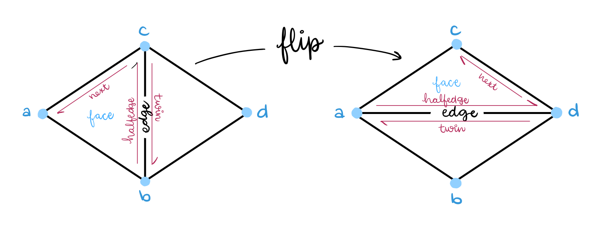Implementation
In order to perform this operation, I first collected all involved edges, half-edges, vertices, and faces labeled in the "before" sketch below, before performing all necessary pointer reassignments for each element to match the assignments labeled in the "after" sketch.
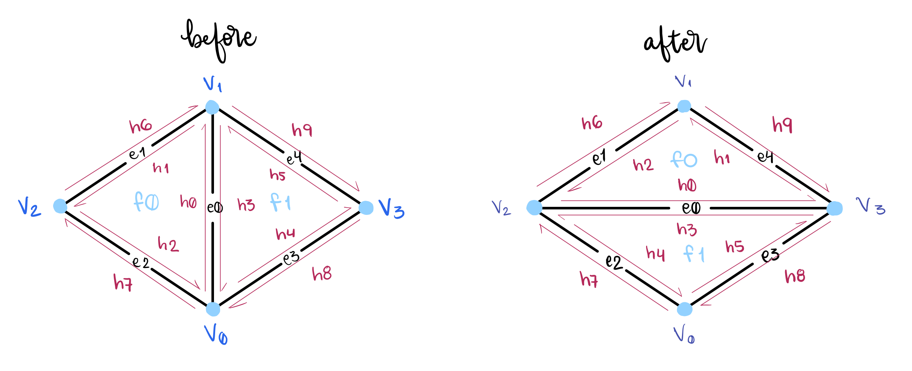I also added a check for whether either neighboring face of the edge is on a boundary loop; in this case, the edge should not be flipped.
Debugging
A lot of the issues that I encountered during this implementation were a result of incorrect element collection/reassignment. After I ran into incorrect flips (half-edges pointing to the wrong vertices, etc), I created a table to organize each of the halfedge pointer assignments. After fixing my assignments, using this table as a reference, the edge flip operation ran smoothly. 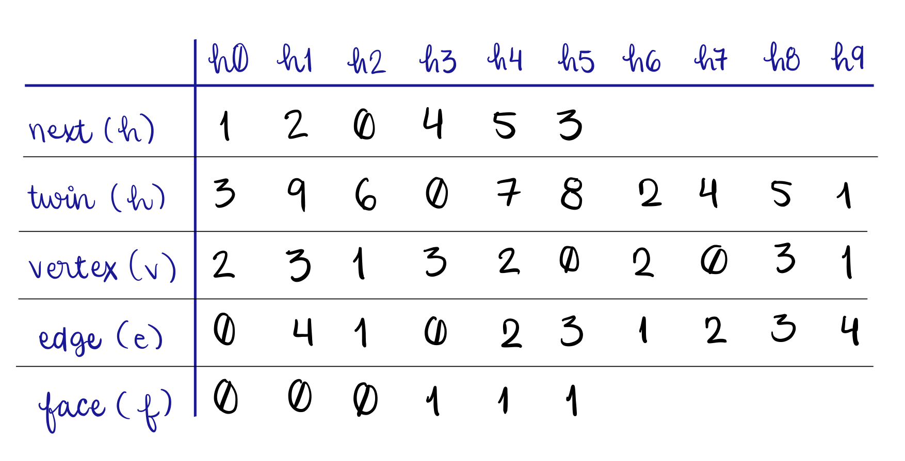Results
Here is the edge flipping operation in action:
Edge Split
Given a pair of triangles (a, b, c) and (c, b, d), a split operation on their shared edge (b, c) inserts a new vertex m at its midpoint and connects the new vertex to each opposing vertex a and d, yielding four triangles. 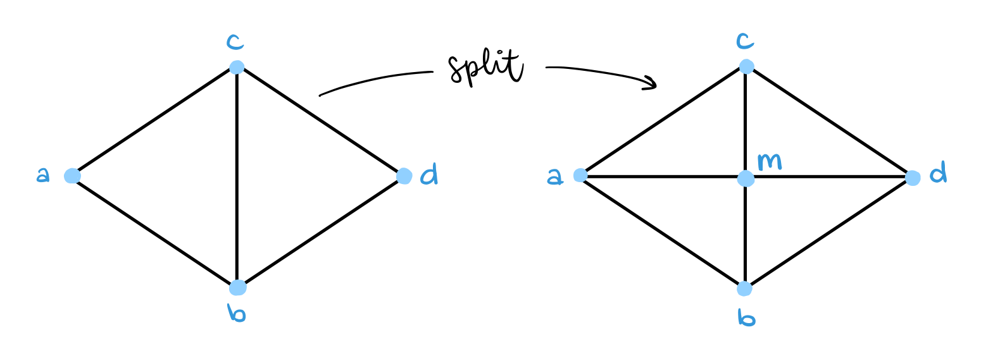Implementation
This implementation echoes that of the edge flip operation, only an edge split requires the addition of new mesh elements, including a new vertex positioned at the midpoint of the split edge, two new faces, three new edges, and six new halfedges. The necessary pointer reassignments are organized below. 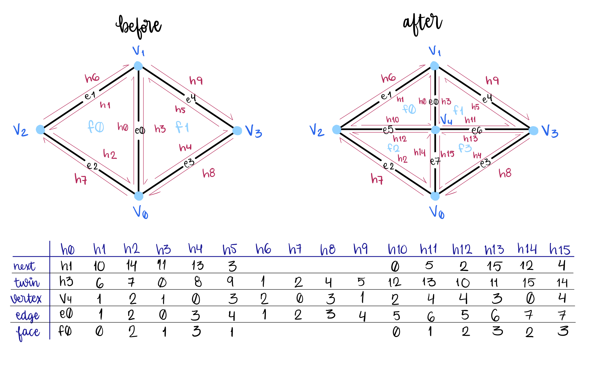 In order to avoid the issues I encountered earlier in my edge flip implementation due to incorrect pointer assignments, I organized pointer assignments beforehand, allowing the split operation to run smoothly at the first test run.Results
Loop Subdivision for Mesh Upsampling
In order to convert a course polygon mesh into a higher-resolution one for better display, more accurate simulation, etc, we can use an upsampling algorithm that nicely interpolates/approximates the original mesh vertices. Loop subdivision upsamples a mesh by subdividing each of its triangles into four smaller triangles and updating all vertices of the subdivided mesh based on the weighted average of neighboring vertex positions. 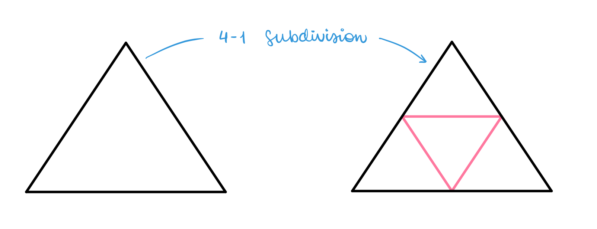Implementation
Pre-computing vertex positions
I started by pre-computing the positions of new vertices as a weighted average of old neighboring vertices. The updated position of an old vertex is(1 - n * u) * origPos + u * neighborSum
where n is the vertex degree, u is a constant equal to 3/16 if n = 3 and 3/(8n) otherwise, origPos is the original position of the old vertex, and neighborSum is the sum of all original positions of the neighboring vertices.The position of a new vertex splitting the shared edge (A, B) between a pair of triangles (A, C, B) and (A, B, D) is
(3/8) * (A + B) + 1/8 * (C + D)
As I iterated through the vertices and edges, I flagged each element as old, which will be useful in the following series of split/fip operations.Splitting and Flipping
Triangle subdivision can be done through a series of split and flip operations illustrated below. 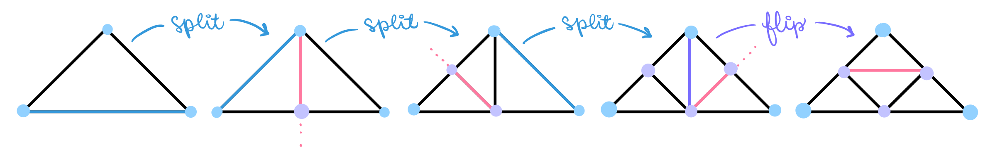 I split every original edge of the triangle, taking special care to avoid splitting newly added edges, which would result in infinite edge splitting. In the illustration, the target edges to be split are colored in blue. Any added elements that come about due to an edge split are flagged as new.Then, I flipped any new edge connecting an old vertex and a new vertex. In the illustration, the target edge to be flipped is colored in purple.
Finally, after peforming these operations, I updated vertex positions to their precomputed values.
Results
Here is loop subdivision in action on a hand mesh:
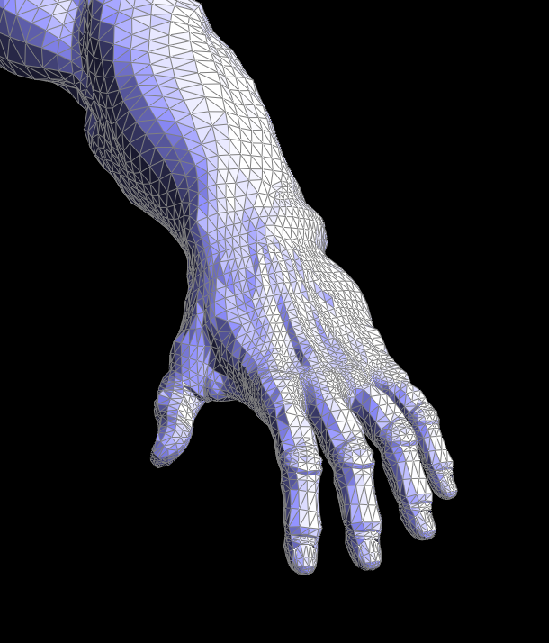 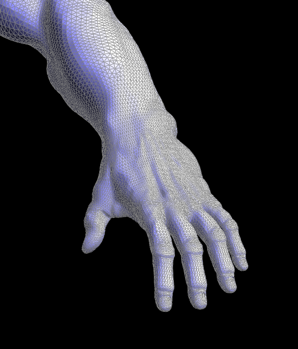
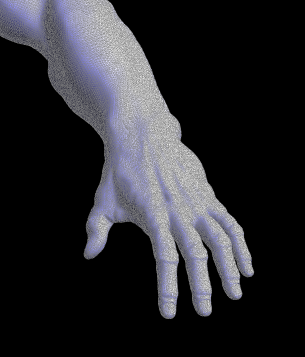
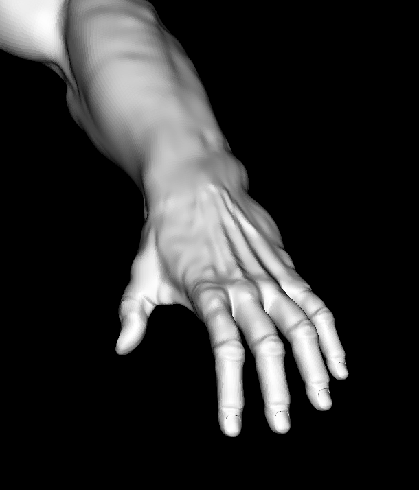
After performing loop subdivision, the sharp edges and corners of the affected mesh become smoothed out. This effect can be combatted by adding more edge loops closer to edges and corners.
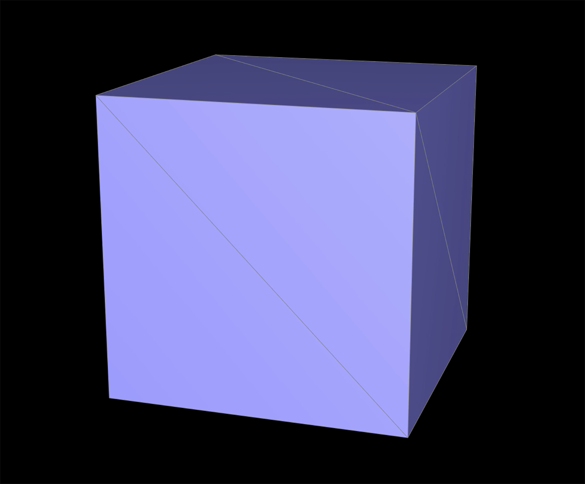
Default cube mesh
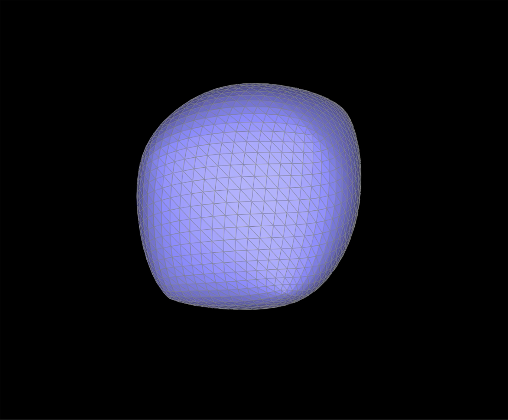
Upsampled default cube mesh
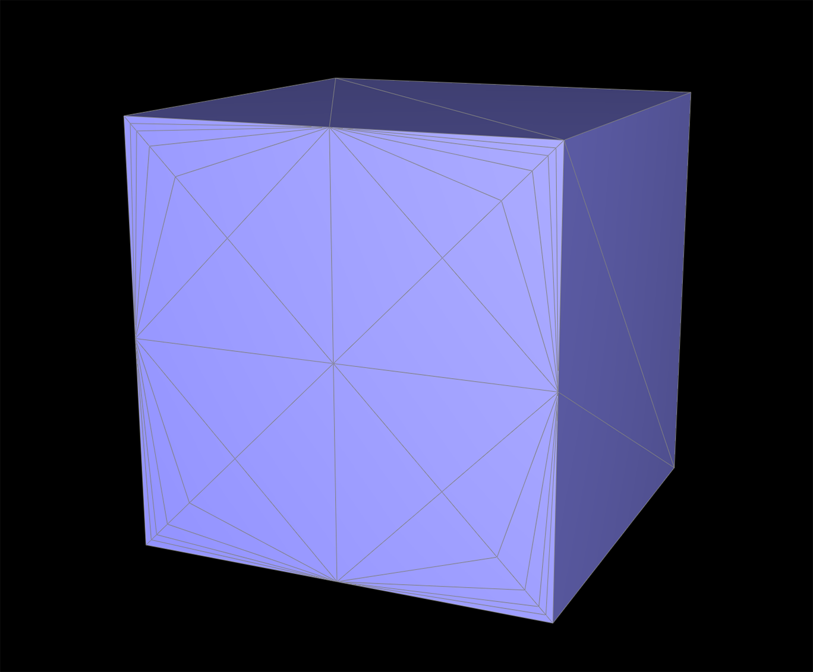
Cube mesh with one face pre-processed
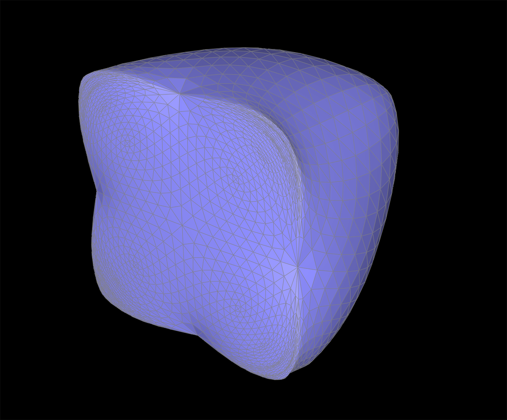
Upsampled pre-processed cube mesh
The side of the cube that was pre-processed with additional edge loops has better preserved corners and edges.
Additionally, as seen above, the default cube becomes slightly asymmetric after repeated subdivisions due to the asymmetric manner of the edges splitting each cube face; thus the reassigned weighted vertex positions are unevenly weighted. In order to combat this, we can pre-process the cube with edge splits to make each face symmetric.
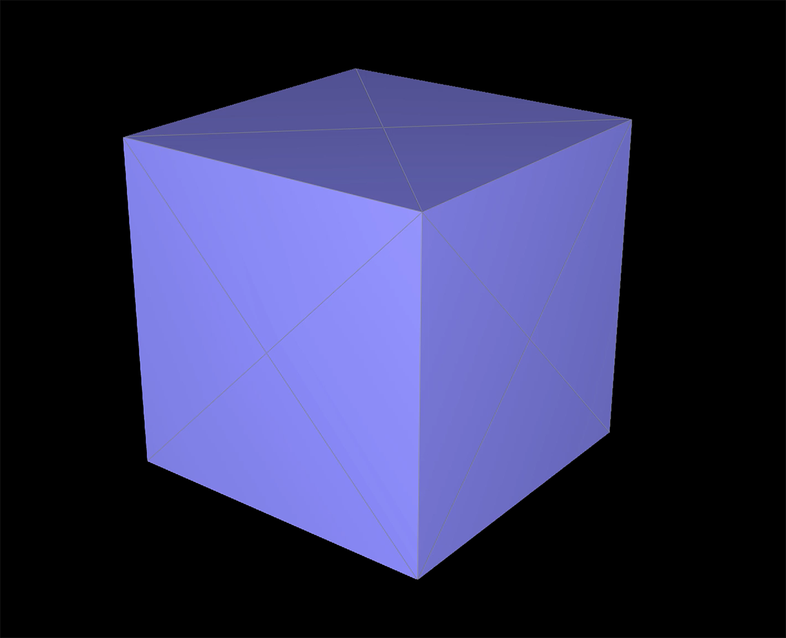 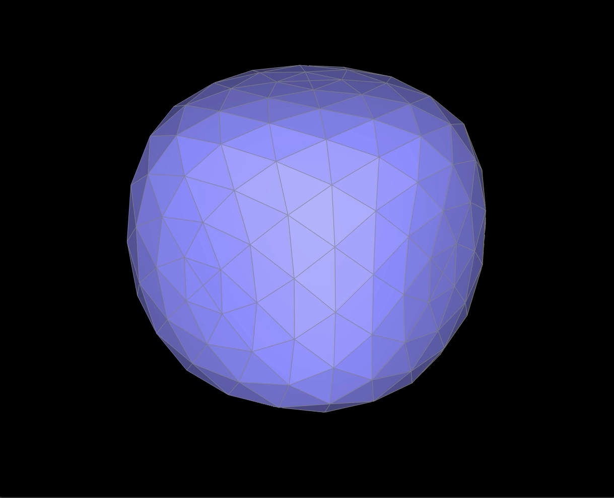
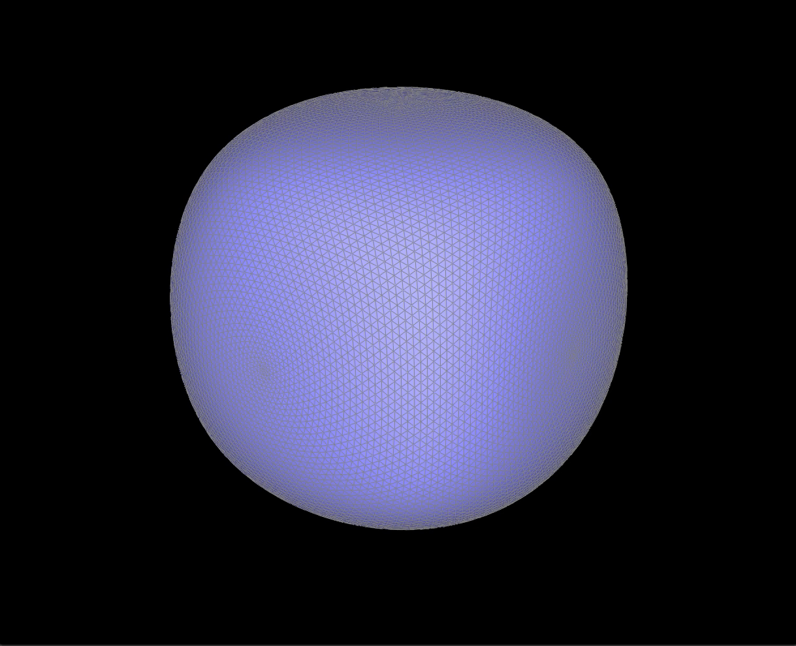
Once all sides of cube are pre-processed to be symmetrical, loop subdivision upsamples the mesh symmetrically.